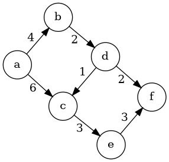
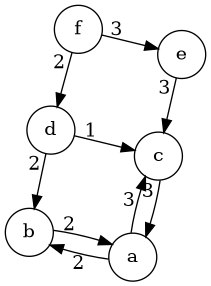
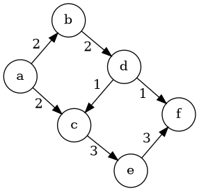
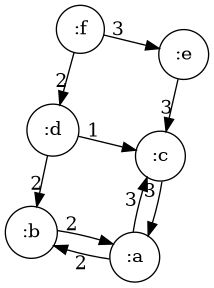
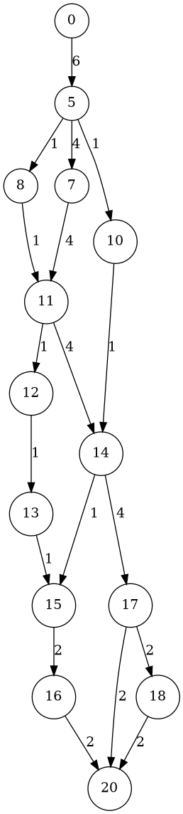

Today, I am going to write about Ford-Fulkerson Algorithm. I wrote about this earlier, but that post was in Common Lisp. Plus, I am going to go over the theory slightly deeper than my original post, and write a new implemention in Clojure. I also posted the text and the code for this post on my github.
We have a weighted simple directed graph \(G = (V,E,w)\) where \(V\) is a finite set of vertices, \(E\subseteq V\times V\) is the set of edges and \(w\colon E\to [0,\infty)\) is the weight function. Here is an example:

I will call a weighted simple directed graph \(G'=(V',E',w')\) an augmenting subgraph of \(G\) if
The last condition says in the subgraph, the total weights of incoming edges at a vertex is equal to the total weight of the outgoing edges on the same vertex. With these conditions at hand, notice that a weighted simple directed graph need not be an augmented subgraph of itself, as in our example above.
Here is an example of an augmenting subgraph:
Notice that any path in \(G\) gives us an augmenting subgraph if we set the weights of each of the edges to the minimal weight along the path. For example the path \(acef\) with all weights equal to \(3\) is an augmenting path.
If \(G=(V,E,w)\) is a weighted simple directed graph and if \(G'=(V',E',w')\) is an augmented graph, the residual graph (which we denote by \(G\setminus G'\) is the graph \((V,E, w'')\) where the weight function \(w''\) is defined as
\[ w''(a,b) = \begin{cases} w(a,b) - w'(a,b) & \text{ if } (a,b)\in E'\\ w(b,a) + w'(a,b) & \text{ if } (a,b)\in E' \text{ and } (b,a)\in E\\ w'(b,a) & \text{ if } (a,b)\in E' \text{ but } (b,a)\notin E \end{cases} \]
In order to simplify the computation, let us set the weight of all nonexistent edges to 0. Then the new weight matrix is going to be
\[ w''(a,b) = \begin{cases} w(a,b) - w'(a,b) & \text{ if } (a,b)\in E'\\ w(a,b) + w'(b,a) & \text{ if } (b,a)\in E' \end{cases} \]
With this definition at hand, for the graph and the augmenting subgraph we gave above the residual graph is going to be

There is a partial order on the set of all augmenting subgraphs of a given weighted simple directed graph. So, if \(G'=(V',E',w')\) and \(G''=(V'',E'',w'')\) are two such graphs then we say \(G'\leq G''\) if \(G'\) is a subgraph of \(G''\) and we have \(w'(a,b)\leq w''(a,b)\) for every \((a,b)\in E'\).
With this definition at hand, now we can talk about maximal augmented subgraphs. Here are two such maximal augmented subgraphs which (necessarily) are incomparable:

Given an augmenting subgraph \(G'=(V',E',w')\) we define the total flow as
\[ Flow(G') = \sum_{s\in Sink(G')} \sum_{(a,s)\in E'} w'(a,s) = \sum_{s\in Source(G')} \sum_{(s,a)\in E'} w'(s,a) \]
Notice that even though both augmenting subgraphs example above are maximal with respect to the partial order we defined above, the total flow from the source to sink are different.
So, we can now talk about a maximal augmenting subgraph with maximal flow. If \(F\) is the weight function of the maximal augmenting subgraph with maximal flow then one can define it recursively as
\[ F(G) = F(G\setminus S) + w_S \]
for an augmenting subgraph \(S\) of \(G\) where \(w_S\) is the weight function of the augmenting subgraph \(S\). The base case is that \(F(G)\) is uniform weight function 0 if \(G\) has no augmenting subgraphs.
The Ford-Fulkerson Algorithm finds the weight function of maximal augmenting subgraph with maximal flow using this recursive formula with augmenting paths for \(S\).
#’user/dot-file
I will represent a weighted simple graph as a hashmap of pairs of vertices:

Here is an augmenting subgraph:

Next, we need a function that returns a residual graph for a weighted simple directed graph and an augmenting subgraph:
(defn residual-graph [G S]
(->> (mapcat (fn [[k v]] {k (- v) (reverse k) v}) S)
(into {})
(merge-with + G)
(filter (fn [[k v]] (> v 0)))
(into {})))Let us test
#'user/RG
{(:b :a) 2, (:c :a) 3, (:f :e) 3, [:a :b] 2, (:f :d) 2, [:a :c] 3, [:d :c] 1, (:e :c) 3, (:d :b) 2}
Next, a depth-first search function to find an augmenting path between two vertices:
(defn find-a-path [G a b]
(loop [H G
x a
P []]
(let [ys (->> (keys H) (filter (fn [[u v]] (= u x))))]
(cond (or (empty? H) (nil? x)) []
(contains? (into #{} ys) [x b]) (reverse (cons [x b] P))
(empty? ys) (recur (dissoc H (first P)) (-> P first first) (rest P))
:true (recur (dissoc H (first ys)) (-> ys first second) (cons (first ys) P))))))Let us test this function. First a random graph:
(defn get-random-graph [n m k w]
(->> (range n)
(mapcat (fn [i] (repeatedly m (fn [] [i (+ 1 i (rand-int k))]))))
distinct
(mapcat (fn [x] {x (+ 1 (rand-int w))}))
(into {})))
(def random-graph (get-random-graph 9 2 5 10))
random-graph#'user/get-random-graph
#'user/random-graph
{[8 9] 5, [3 4] 6, [8 10] 3, [4 9] 9, [1 4] 7, [5 7] 4, [4 8] 10, [1 5] 1, [5 6] 2, [6 11] 3, [2 7] 8, [3 6] 8, [7 10] 10, [0 2] 10, [6 10] 6, [2 6] 9}
Finally, our implementation of Ford-Fulkerson:
(defn ford-fulkerson [G a b]
(loop [H G S {}]
(let [R (find-a-path H a b)]
(if (empty? R)
(into {} S)
(let [v (reduce min (map H R))
P (zipmap R (repeat v))]
(recur (residual-graph H P) (merge-with + S P)))))))Let us test this on the graph we defined above:

Let us look find an augmenting suggraph on a different large random-graph
#'user/random-graph
{[8 11] 3, [16 19] 5, [7 12] 1, [18 23] 5, [13 15] 9, [7 11] 9, [10 15] 5, [2 5] 9, [15 16] 9, [10 13] 7, [15 19] 7, [6 7] 9, [12 13] 7, [5 10] 5, [0 5] 3, [3 4] 10, [19 24] 5, [11 14] 5, [19 22] 1, [18 19] 4, [7 8] 7, [8 10] 6, [14 19] 4, [9 12] 2, [4 9] 3, [15 20] 5, [4 6] 4, [11 12] 10, [1 3] 2, [4 8] 1, [10 11] 1, [5 6] 9, [5 8] 3, [16 18] 2, [8 13] 5, [9 11] 2, [6 11] 7, [10 12] 8, [2 7] 10, [13 17] 3, [2 4] 4, [12 15] 1, [0 2] 6, [6 9] 9, [11 15] 5, [19 21] 3, [0 4] 3, [14 18] 4, [9 13] 6, [13 16] 7, [13 18] 2, [6 10] 10, [14 16] 4, [1 6] 7, [16 20] 6, [18 21] 6, [2 6] 10, [8 12] 3, [12 16] 4, [1 2] 4, [18 20] 4, [3 5] 4, [17 22] 9, [11 16] 3, [0 1] 2, [17 20] 4}
#'user/augmenting-subgraph
{(7 6) 8, [8 11] 4, [7 12] 1, (10 5) 4, [13 15] 7, (11 9) 3, (4 3) 2, [7 11] 2, [10 15] 3, [2 5] 8, [15 16] 5, [6 7] 9, [12 13] 6, [5 10] 6, [0 5] 8, [3 4] 3, [11 14] 8, [8 10] 1, [9 12] 2, [4 9] 3, (6 5) 7, [15 20] 5, (5 2) 4, [4 6] 2, (11 8) 2, [11 12] 3, [1 3] 2, (6 4) 1, [5 6] 9, [5 8] 3, (14 11) 4, [9 11] 3, [6 11] 3, [2 7] 2, [0 2] 6, [0 4] 3, [14 18] 4, [9 13] 1, (3 1) 1, [1 6] 1, [16 20] 5, (5 0) 5, [18 20] 4, [0 1] 2}
Let me simplify the output by removing spurious feedback loops:
(defn clean [G]
(let [ks (into #{} (keys G))
H (->> (map reverse ks)
(filter ks)
(mapcat (fn [k] (let [v0 (G k) v1 (G (reverse k))]
(if (> v0 v1)
{k (- v0 v1)}
{(reverse k) (- v1 v0)}))))
(into {}))]
(as-> (map reverse (keys H)) $
(concat (keys H) $)
(into [] $)
(merge (apply dissoc G $) H)
(filter (fn [[k v]] (> v 0)) $))))
(def cleaned (clean augmenting-subgraph))
So, here is the final version of mu implementation of the Ford-Fulkerson algorithm to find a maximal augmenting subgraph with maximal flow:
(defn ford-fulkerson [G a b]
(loop [H G S {}]
(let [R (find-a-path H a b)]
(if (empty? R)
(into {} (clean S))
(let [v (reduce min (map H R))
P (zipmap R (repeat v))]
(recur (residual-graph H P) (merge-with + S P)))))))and a final test: